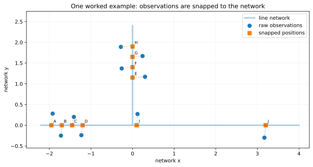
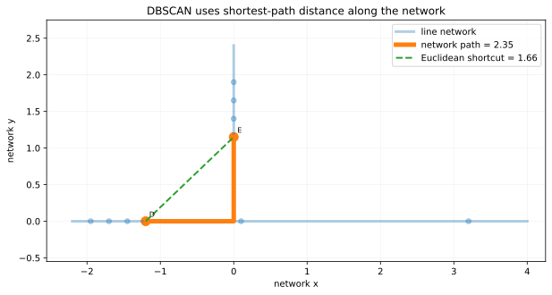
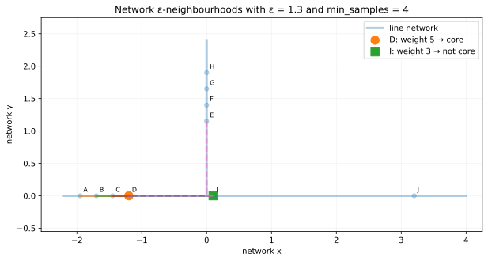
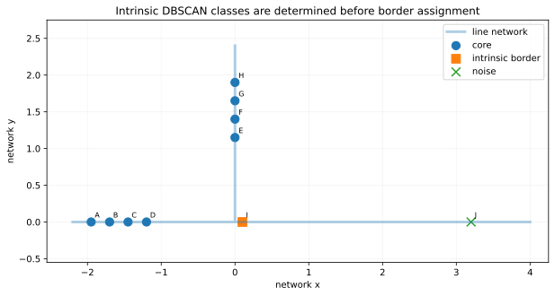
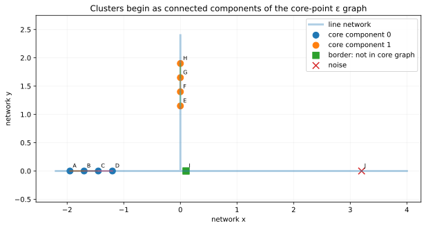
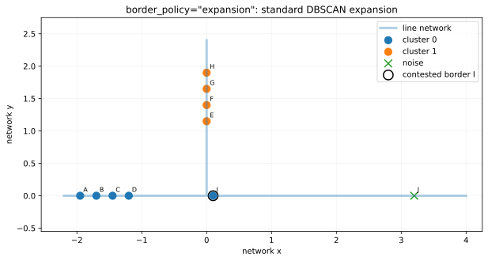
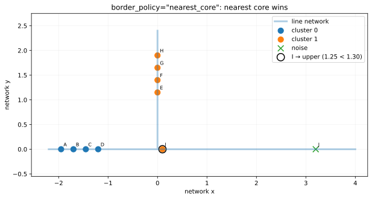
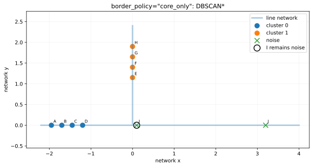
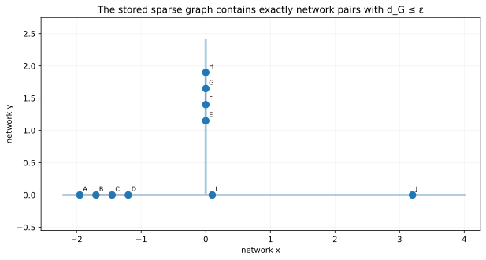
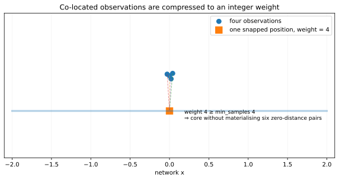

How net-dbscan works
net-dbscan runs DBSCAN in network-distance space.
The observations are snapped to a supplied line network, the ε-neighbour relation is built from
shortest-path distance on that network, core positions are identified by weighted neighbourhood
mass, and clusters arise from connected components of the core-point ε graph. Border assignment
is then handled explicitly by one of three policies.
eps = 1.3 and min_samples = 4.
The example contains two dense core components, one contested border position, and one isolated
noise position.
Start with one small network
The raw observations need not sit exactly on the line network. The package first snaps each point to the nearest point of the nearest canonical network arc. Snap distance is retained as QA metadata but is not added to the clustering metric.

- Replace straight-line distance by network shortest-path distance.
- Build the exact ε-neighbour relation in network space.
- Classify core, border, and noise positions.
- Take connected components of the core-point ε graph.
- Resolve border assignments according to the selected border policy.
- Expand weighted position-level results back to observations.
1. Define distance on the network
If observations \(i\) and \(j\) snap to network positions \(s_i\) and \(s_j\), then
The path must follow actual network arcs. Two lines that cross geometrically are not connected
unless they share a vertex after vertex_digits canonicalisation.

2. Build ε-neighbourhoods in network space
The network ε-neighbourhood of position \(i\) is
For ordinary unweighted observations, a position is core when
With eps = 1.3 and min_samples = 4, position D has
5 observations in its network ε-neighbourhood and is core.
The contested position I sees only itself plus one core position from each dense component,
for total neighbourhood weight 3; it is therefore not core.

3. Core, border, and noise are intrinsic
Once core status is known, a non-core position is an intrinsic border position if it lies within ε of at least one core position:
A non-core position with no core neighbour is noise. In the worked example, A–H are core, I is border, and J is noise.

4. Core connectivity defines the clusters
Form the core graph
The connected components of this graph are the invariant DBSCAN core clusters. Border points do not connect two otherwise separate core components.

net-dbscan, border_policy never changes core status or these core
connected components. It changes only what happens to non-core border observations.
5. Resolve contested border points
Position I is within ε of two different core clusters. Its nearest left-cluster core is D at network distance 1.30; its nearest upper-cluster core is E at 1.25. This single point lets us see all three policies.
expansion: standard DBSCAN expansion
This is the standard scikit-learn DBSCAN result on the deterministic sparse graph. The border point is assigned when cluster expansion first reaches it. In this worked ordering, I joins the left cluster.

nearest_core: nearest core cluster
For every border position \(i\), choose the adjacent core position minimising network distance:
An exact distance tie goes to the smaller deterministic core-cluster label. Here E is closer than D, so I moves to the upper cluster.

core_only: DBSCAN*
Leave every border point unassigned. The intrinsic field is_border remains true, but
the final label is noise.

| Property | expansion | nearest_core | core_only |
|---|---|---|---|
| Core positions | same 8 | same 8 | same 8 |
| Core components | same 2 | same 2 | same 2 |
| I intrinsic border? | yes | yes | yes |
| I final assignment | left cluster | upper cluster | noise |
6. The package stores only the ε graph it needs
Unlike an all-pairs DBSCAN implementation, net-dbscan does not build the full
distance matrix. It runs bounded shortest-path searches and stores exactly the finite pairs satisfying

This distinction matters: changing eps changes the DBSCAN model itself.
It is not an adaptive computational horizon.
7. Duplicate snapped positions become weights
Several observations can snap to exactly the same network position. The package compresses them into one distinct position with integer weight \(w_i\). The weighted neighbourhood mass is
and the core rule becomes

From the derivation to the package
from net_dbscan import DBSCANConfig, cluster_geodataframes
out = cluster_geodataframes(
points=points,
network=network,
config=DBSCANConfig(
eps=500,
min_samples=5,
border_policy="nearest_core",
),
point_id_col="canonical_id",
)
out.points
out.clusters
out.summary
out.analysisThe lower-level sequence is direct:
line network
↓ build_network_graph
raw points
↓ snap_points
snapped observations
↓ distinct_positions
weighted network positions
↓ neighbor_graph(max_distance=eps)
sparse matrix of d_G ≤ eps
↓ dbscan(..., metric="precomputed")
weighted core positions
↓ connected core components
intrinsic DBSCAN clusters
↓ border_policy
final labelsWhat is standard DBSCAN and what is specific to net-dbscan?
| Stage | Standard DBSCAN idea | net-dbscan |
|---|---|---|
| Base metric | Usually Euclidean or another metric | Shortest path between continuous snapped positions on a supplied line network |
| ε neighbourhood | All points within radius ε | All snapped positions with network distance ≤ ε |
| Core criterion | At least min_samples observations in ε neighbourhood | Weighted neighbourhood mass; duplicate snapped positions carry integer multiplicity |
| Core clusters | Density-connected core components | Connected components of the sparse network ε graph restricted to core positions |
| Border assignment | Standard expansion | expansion, nearest_core, or core_only |
| Distance computation | Often implicit or dense | Spatially local bounded shortest-path search; only ε pairs are stored |
| Topology | Not usually an issue | Crossings connect only through shared canonical vertices; MultiLineString parts are not implicitly joined |
References
- Ester, Kriegel, Sander & Xu (1996), A Density-Based Algorithm for Discovering Clusters in Large Spatial Databases with Noise.
- scikit-learn DBSCAN documentation and implementation for standard expansion semantics.
- net-dbscan source repository.